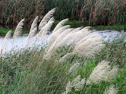
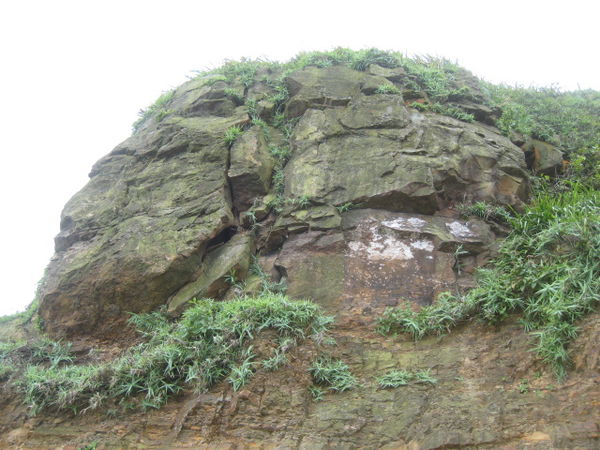

為什麼禾本科植物會被說成地球上最成功的植物呢?
- 請同學看看展示的資料，認識一下甚麼是禾本科植物!
- 同學們可以觀察一下前方展示的植物，看看是否與介紹說的相符!
- 找不到答案嗎!?請點選下面的"顯示答案"!!
下面圖片中植物都是禾本科植物
海邊沙灘上的濱刺麥(Spinifex littoralis)

河川地裡的甜根子草(Sacchanum spontaneum)

堅硬山壁上的台灣蘆竹(Arundo formosana)
最成功的植物－禾本科植物
禾本科植物約佔全球植被的四分之一。禾本科植物能夠生長於任何低雨量、土壤貧、草食動物大肆啃食而其他植物通常難以生存的地方。
禾本科的生長方式

約五分之四的禾本科植物體在地下形成緊密的叢簇，而將土壤緊附再一起。
綠色的株叢在地表上生長，走莖則在地下蔓延，新的植株持續地生長出來，且由於生長下所以當植株被砍或被吃時，生長點不會受損。